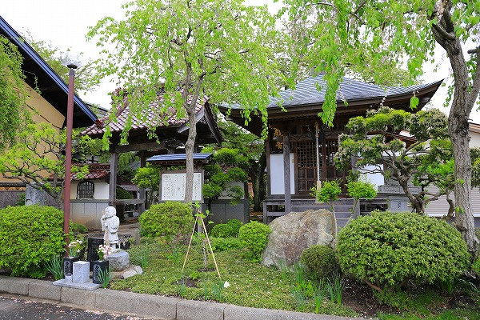
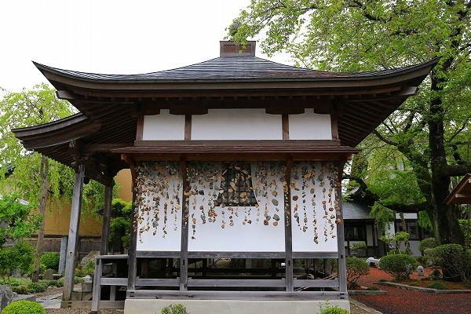
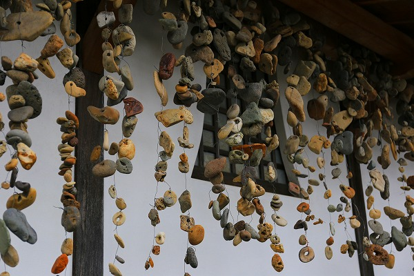
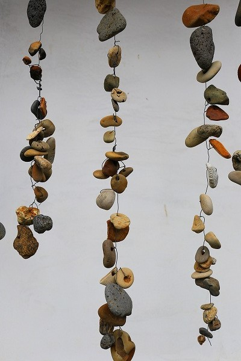
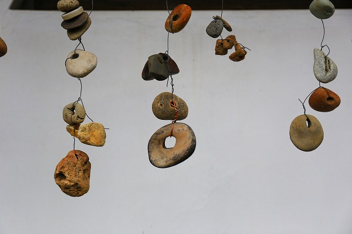
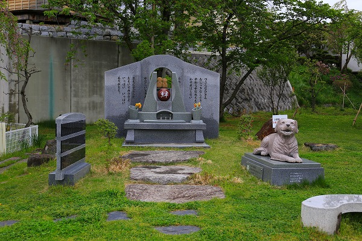
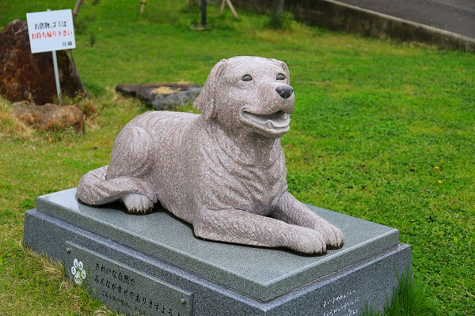

岩手県に
蟠龍寺という小さなお寺がある。
このお寺…どういう訳だか何を目的に訪れたのか、サッパリ思い出せない。
多分、雰囲気が良さげだったので寄り道したんだと思う。
この時点ではまさか
あんな凄いモノがあるとは想像だにしていなかった事だけは確かだ。

お寺の入り口近くに小さなお堂がある。
説明書きによれば
慈覚大師作の聖徳太子像が安置されているという。
中を見てみたが、本尊の脇にある小さめの像がそうなのかな～、といった塩梅。
慈覚大師とは最澄の弟子で数々の名刹を開いた高僧だ。
特に関東、東北地方を巡錫した際に数々の寺を開いており、その数は700を超えるとも言われている。
当サイト既報の
立石寺、
恐山をはじめ松島の瑞巌寺、平泉の中尊寺、毛越寺など東北地方を代表する名刹を開いたのも慈覚大師。
つまり東日本、特に東北地方の仏教伝播において重要な役割を果たした人物なのである。
そんな東北巡錫の際にこの地に立ち寄り、聖徳太子像を作ったのだろう。
この太子像、
八耳聴聖徳太子像と呼ばれ、
耳の病に霊験があるという。
ああ、聖徳太子の十人の話をいっぺんに聞き分けられるというアレから由来してるのかな？
…スミマセン、ここから慈覚大師の偉業の話から一転してグッと俗っぽい話になります。
お堂の脇に回ると驚愕の光景が。

大量の石がスダレのようにぶら下がっているではないか！

穴の開いた石が数珠つなぎに軒下にぶら下がっているのだ。
その数は千以上。
穴の開いた石は「耳が通る」という意味が込められており、耳の病に悩む多くの人々が奉納したものだ。
この習俗は全国的に見られるが、一般的には無造作に積み上げられている。
ここまで大量に、しかも数珠つなぎにぶら下げているようなところは私は知らない。
その迫力に圧倒された。

先程の説明書きの続きを。
「…奉納されている穴石を借りて二十一日間快方祈願をし、成就の後、穴石を一個加えて返納する習わしがあります。」
つまり
願いの成就した数だけ倍々に穴石が増えていく仕組みになっているのだ。

白壁の前に吊り下げられた穴石はオシャレなオブジェのようでもある。
しかしそのスタイリッシュな「展示」は
人々の切実な願いによって構成されていることだけは常に肝に銘じておかなければなるまい。

お寺の片隅にペット供養のコーナーがあった。

一時テレビなどで話題になったごみ拾い犬もも子の像だった。
この話、私がここでどうこう言うよりも
お寺のホームページを観た方が切実で心に迫るものがあるので、是非
こちらをご一読下さい。
マジでチョット泣けるよ…